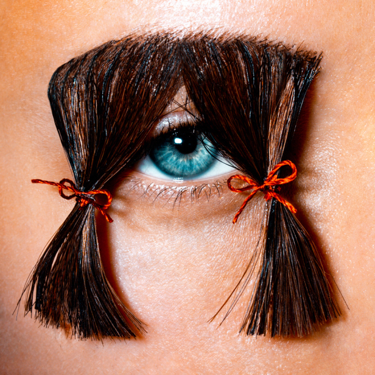
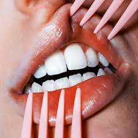
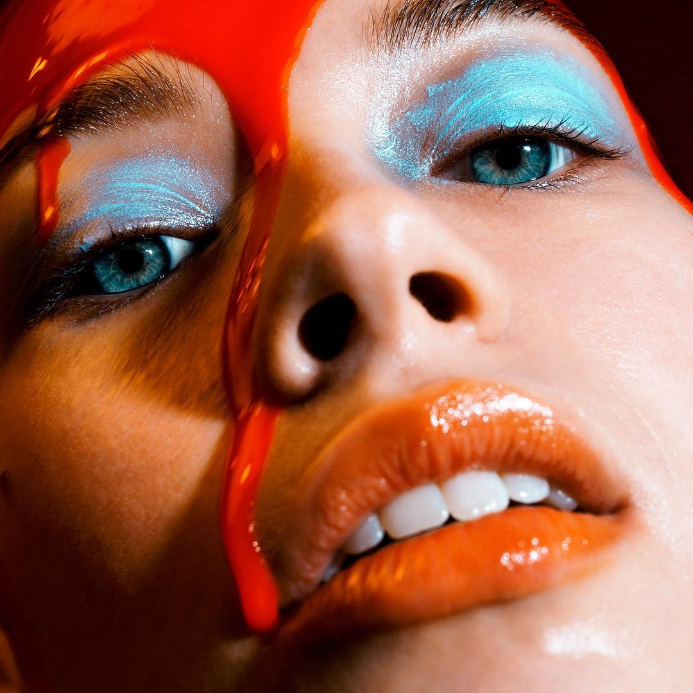

Marius Sperlich - vienas iš sparčiausiai populiarėjančių tinklalapio "Instagram" fotomenininkų. Šią akimirką Marius Sperlich "Instagram" puslapis turi daugiau nei 329 tūkstančius sekėjų, tačiau kas jo darbus išskiria iš kitų?
Marius Sperlich savitumas slypi jo simboliuose bei tam tikrų vizualiai kontrastingų objektų sugretinime. Dėmesį pritraukia ryškios jo naudojamos spalvos, rasinė modelių įvairovė, didelis nuotraukų kontrastas bei kūrybingos kompozicijos. Režisuodamas savo fotosesijas jis daug dėmesio ir laiko skiria detalėms bei smulkiems akcentams. Lūpas jis paverčia į sušį, mėsainį, gimtadienio tortą ar net paplūdimį, antakį - į užuolaidas akiai, o užmerktą akį - į užsidariusią parduotuvės vitriną.
Marius savo socialinių tinklų platformą naudoja ir socialinėms problemoms spręsti, savo nuomonei išreikšti. Fotografas palaiko absoliučią lyčių ir rasių lygybę, o jo nuotraukos aiškiai tai įrodo. Marius palaiko #freethenipple judėjimą, kuris teigia, jog itin svarbu yra atsikratyti seksualinių prielaidų, susijusių su moters kūnu, bei panaikinti "tabu" aurą, supančią nuogų kūnų vaizdavimą mene.
Būtent toks Marius savitumas ir išskiria jį iš kitų kūrėjų socialiniuose tinkluose.
|  |  |  |
Jo kūrinius galite rasti čia: